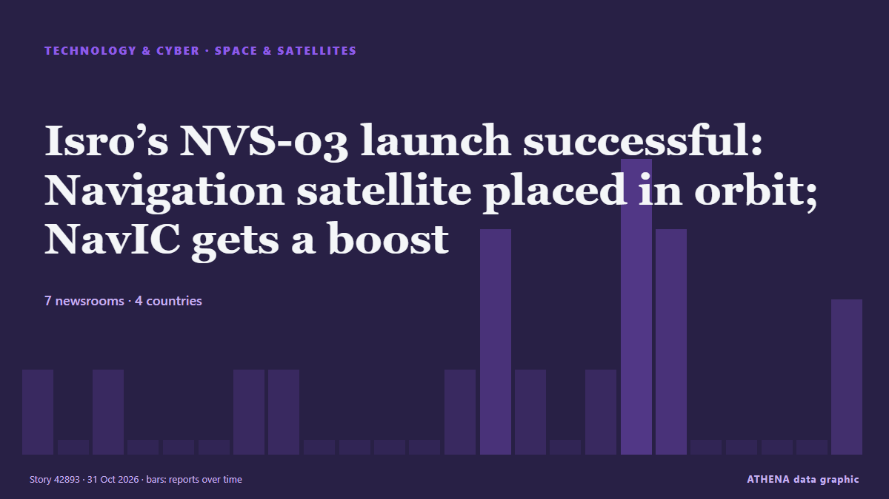

Isro’s NVS-03 launch successful: Navigation satellite placed in orbit; NavIC gets a boost

GSLV-F18 carrying 2,250kg next-generation navigation satellite -- NVS-03 -- lifted off from the second launch pad at the Satish Dhawan Space Centre (SDSC-SHAR) in Sriharikota at 11.51pm on Friday, as… από Times of India
Αναφέρθηκε ανεξάρτητα από 7 μέσα σε 4 χώρες από τις 28 Οκτ, πρώτο από το The Hindu· η κάλυψη βρίσκεται στο αποκορύφωμά της. Το ATHENA δεν βρίσκει ενδείξεις κινδύνου στην κάλυψη. Η βεβαιότητα είναι 80% (υψηλή), καθώς το επιβεβαιώνουν 7 ανεξάρτητα μέσα με μέση αξιοπιστία πηγών 69%. Ποιοι το ανέφεραν: 15 μέσα στη χώρα Ινδία · India, 1 μέσα στη χώρα Γερμανία · Germany, 1 μέσα στη χώρα Ηνωμένες Πολιτείες · United States. Η κάλυψη διήρκεσε από 28 Οκτ έως 31 Οκτ, 70 ώρες.
Γιατί έχει σημασία: Οι εξελίξεις στην τεχνολογία και την κυβερνοασφάλεια διαμορφώνουν την ασφάλεια, τον ανταγωνισμό και τους κανόνες της ψηφιακής ζωής.
Τι άλλαξε: 10 νέες αναφορές από 6 μέσα στο 24ωρο έως 31 Οκτ.
Πρώτη διατύπωση: ISRO to launch navigation satellite NVS-03 on Friday
Οι τίτλοι των ειδήσεων παρουσιάζονται στα αγγλικά, όπως δημοσιεύτηκαν.
Με μια ματιά
Επιλέγεται, βαθμολογείται και γράφεται από τη δημοσιευμένη μεθοδολογία του ATHENA. Κανένας συντάκτης δεν παρεμβαίνει σε μεμονωμένα γεγονότα. Πώς παράγεται ›
| 28 Oct 12:59 UTC | 1 |
|---|---|
| 28 Oct 15:59 UTC | 0 |
| 28 Oct 18:59 UTC | 1 |
| 28 Oct 21:59 UTC | 0 |
| 29 Oct 00:59 UTC | 0 |
| 29 Oct 03:59 UTC | 0 |
| 29 Oct 06:59 UTC | 1 |
| 29 Oct 09:59 UTC | 1 |
| 29 Oct 12:59 UTC | 0 |
| 29 Oct 15:59 UTC | 0 |
| 29 Oct 18:59 UTC | 0 |
| 29 Oct 21:59 UTC | 0 |
| 30 Oct 00:59 UTC | 1 |
| 30 Oct 03:59 UTC | 3 |
| 30 Oct 06:59 UTC | 1 |
| 30 Oct 09:59 UTC | 0 |
| 30 Oct 12:59 UTC | 1 |
| 30 Oct 15:59 UTC | 4 |
| 30 Oct 18:59 UTC | 3 |
| 30 Oct 21:59 UTC | 0 |
| 31 Oct 00:59 UTC | 0 |
| 31 Oct 03:59 UTC | 0 |
| 31 Oct 06:59 UTC | 0 |
| 31 Oct 09:59 UTC | 2 |
Γιατί αυτοί οι αριθμοί
Σημασία
Κίνδυνος
Βεβαιότητα
Η κάλυψη — ποιος το ανέφερε και πότε
ο τίτλος όπως δημοσιεύτηκε · ανοίγει το πρωτότυπο- The Hindu · Ινδία · IndiaISRO to launch NVS-03 satellite on October 30
- Indian Express · Ινδία · IndiaISRO to launch navigation satellite NVS-03 on Friday
- Hindustan Times · Ινδία · IndiaISRO to launch NVS-03 satellite on October 30 to boost navigation for trains, vehicles and ships
- Indian Express · Ινδία · IndiaToday News Headlines for School Assembly, October 30, 2026: India beats China 5-2 in Asian Champions Trophy
- The Hindu · Ινδία · IndiaCountdown progressing for ISRO’s crucial GSLV-F18 launch carrying navigation satellite NVS-03
- The Hindu · Ινδία · IndiaWhy is ISRO’s NVS-03 satellite launch crucial? | Explained
- DW English · Γερμανία · GermanyIndia news: Space agency to boost GPS alternative with new satellite
- Times of India · Ινδία · India'One Nation, One Time': Why Isro is sending atomic clocks into space
- Times of India · Ινδία · IndiaIsro's NVS-03 launch: The Kargil lesson and why India wants its own 'desi GPS'
- Times of India · Ινδία · IndiaIsro’s NVS-03 launch successful: Navigation satellite placed in orbit; NavIC gets a boost
- Hindustan Times · Ινδία · IndiaIsro successfully launches NVS-03 satellite to strengthen India's NavIC navigation system, improve civilian access
- The Hindu · Ινδία · IndiaNVS-03 launched successfully; satellite placed in intended orbit | Highlights
- Indian Express · Ινδία · IndiaISRO’s GSLV rocket carrying navigation satellite lifts off
- The Hindu · Ινδία · IndiaGSLV places next-generation navigation satellite NVS-03 into orbit
- Times of India · Ινδία · IndiaHow Isro's NVS-03 launch will revive NavIC, boost military independence
- Space.com · Ηνωμένες Πολιτείες · United StatesIndia launches next-gen navigation satellite to orbit (video)
- The Hindu · Ινδία · IndiaISRO NVS-03 launch: 5 things to know about India’s new navigation satellite
- Gulf News · Ηνωμένα Αραβικά Εμιράτα · United Arab EmiratesIndia launches NVS-03 to boost its homegrown GPS system